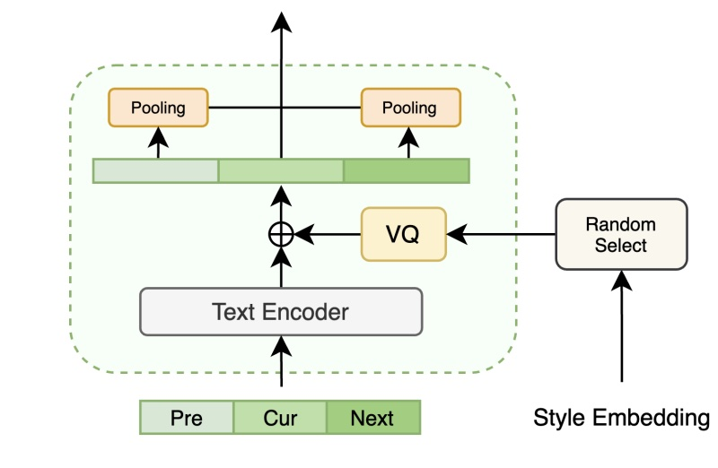
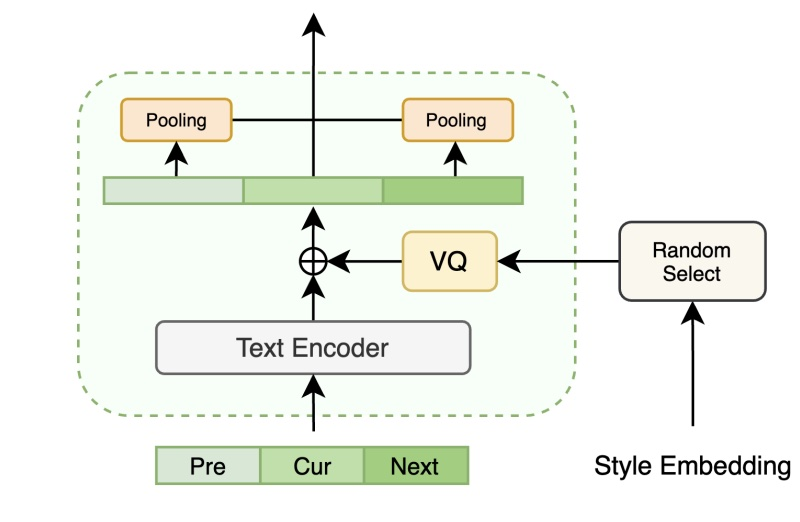
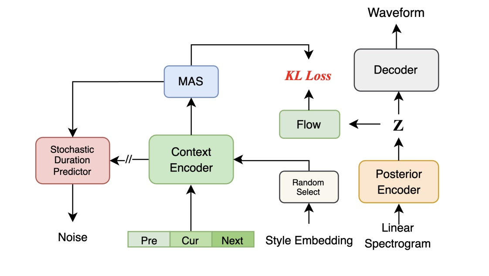

自我介绍
郭大可 2025
HiGNN-TTS: 利用文本结构的表现力有声书合成
- 出发点：韵律表达与文本依存(韵律)结构相关 -> 如何高效利用文本信息？
- 方法
- 依存关系与韵律表达强相关 -> 句法依存图作为先验信息 -> GNN建模
- 层次化的韵律建模 -> 词/句/上下文 -> 虚拟全局节点+上下文 Attention
- 利用文本语义信息 -> Bert Embedding 初始化图节点
- 无监督学习效果差 -> 预训练的 Mel Encoder 做监督

TACA-TTS: 从大量野生数据中建模"文本->风格"映射
- 出发点: 当 AM 和数据固定时，TTS 的表现力上限取决于风格表征的好坏
- 方法：
- AM 对数据质量要求高，联合训练风格表征存在局限性-> 将风格建模从声学模型中解耦，多阶段训练(风格空间构建->"文本-风格"映射->声学模型联调)
- 少量有标注数据+大量无监督数据+对比学习 -> 完备的风格空间
- 大量文本音频对+对比学习+cos loss -> "文本-风格"映射
- 设计context encoder 从文本中编码风格表征，在两种主流声学模型(Vits,LM)上验证有效性
 

TACA-TTS: 从大量野生数据中建模"文本->风格"映射
- 对比学习正负样例构建：
- 同一句的不同切片→正样例
- 同一类别的不同音频切片→正样例
- 音频风格表征间相似度，大于α→正样例，小于β→负样例
- 声学模型设计：
风格空间构建：
文本-风格映射：
